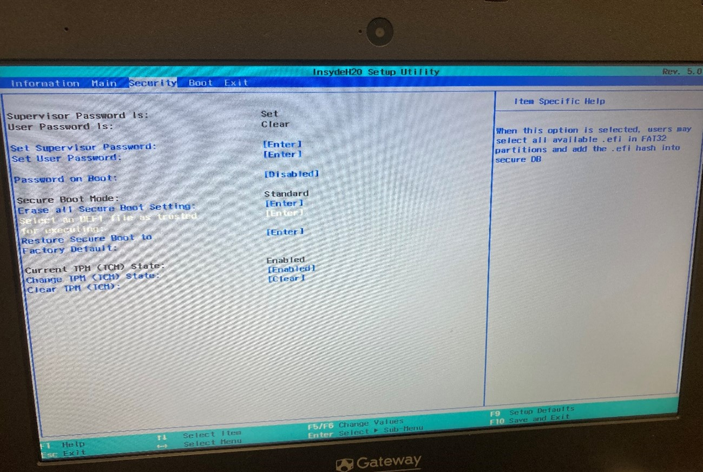

デュアルブート設定
1. USBメモリへのUbuntuインストーラの作成
Rufusを使用してブータブルUSBを作成します。
- Rufusを起動する
- USBメモリを接続する
- 「デバイス」でUSBメモリを選択
- 「ブートの種類」でUbuntuのISOファイルを選択
- 「スタート」をクリックしてUSBの作成を開始

Rufusは、USBドライブを使ってブート可能なメディア（起動ディスク） を作成するための無料のWindows用ソフトウェアです。
2. BIOS設定の変更
PCの起動順序を変更してUSBからブートできるようにします。
- PCを再起動し、起動時にF2キーを連打してBIOS画面を開く
- 「Boot」メニューを選択
- 起動順序でUSB HDDを最優先に設定
- 設定を保存して再起動



再び起動するとubuntuのインストーラのブート画面になるため、インストーラをここで起動します。
3. Ubuntuのインストール
Windowsと共存するようにUbuntuをインストールします。
- 「Ubuntuをインストール」を選択
- キーボードレイアウトは日本語を選択
- インストールの種類で「Ubuntu を Windows Boot Manager とは別にインストール」を選択
- パーティションサイズを調整
- 地域とユーザー情報を設定
- インストール完了後、USBを抜いて再起動

6.の際にUSBを抜かなかったら、再びインストーラが起動してしまうため注意する。
3.の際に、「ディスクを削除してubuntuをインストール」を選択するとWindowsの領域をすべて削除して ubuntuのみをインストールすることになる。 また、「それ以外」は3つ以上のOSを併用する場合に選択する。
4. セキュアブートの設定
セキュアブートの設定を行います。
- 再起動時に再びBIOSを開く
- 「Set Supervisor Password」でパスワードを設定
- セキュアブートのオプションを設定
- 設定を保存して再起動すると、ubuntuが起動する
3.では2.でパスワードを設定した際に選択可能になった、「Select an UEFI file as trusted for executind」 から、HDD0->EFI->ubuntu->shimx64.efiと選択する。